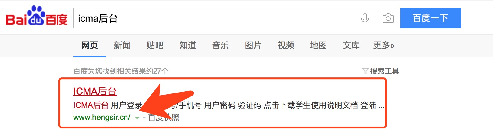
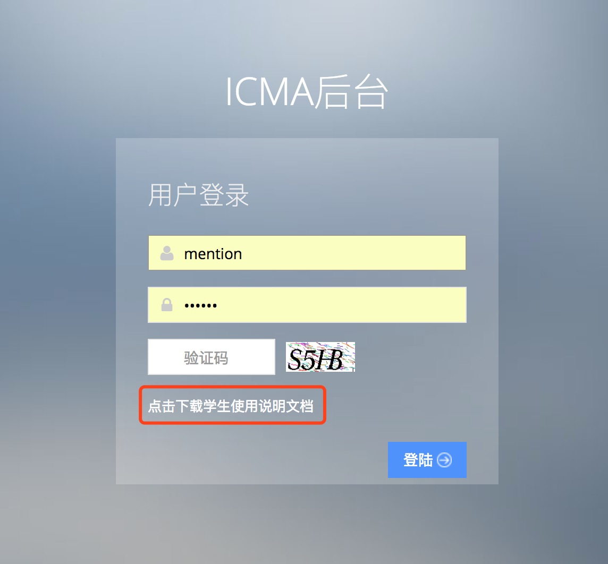
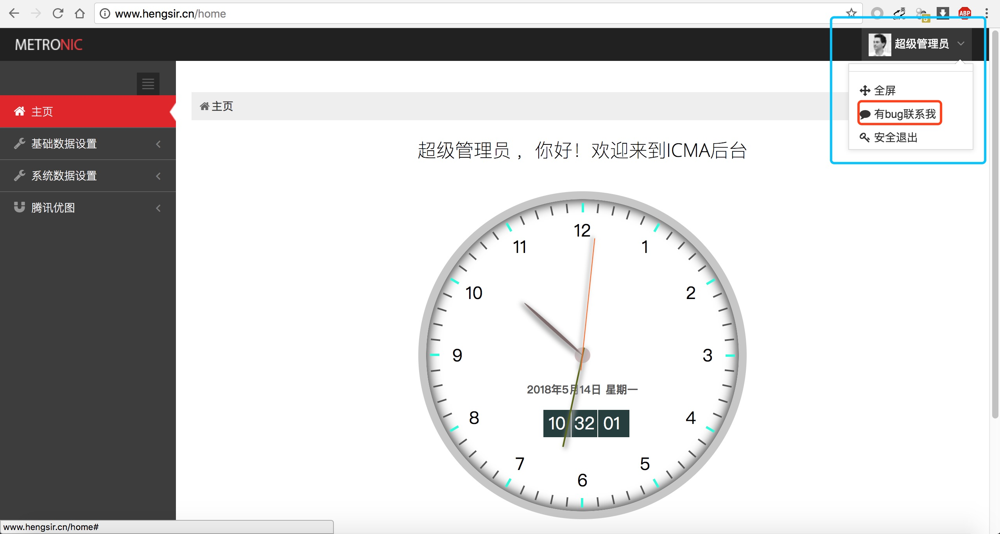
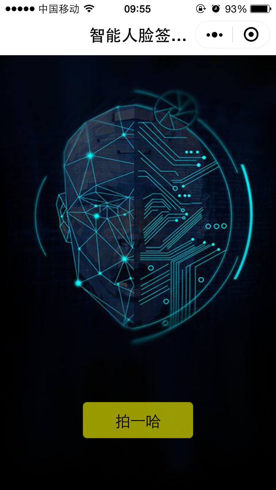
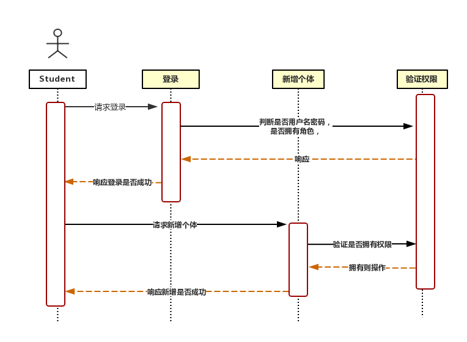
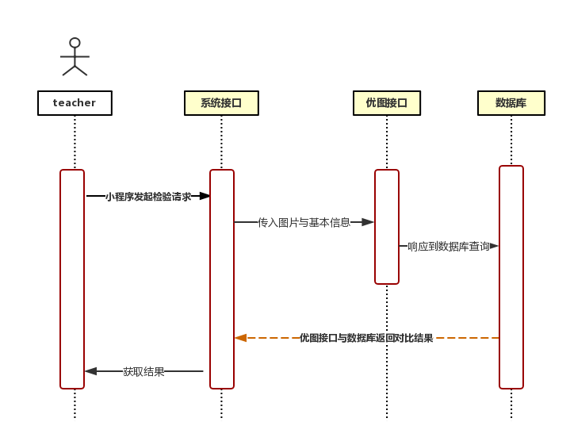
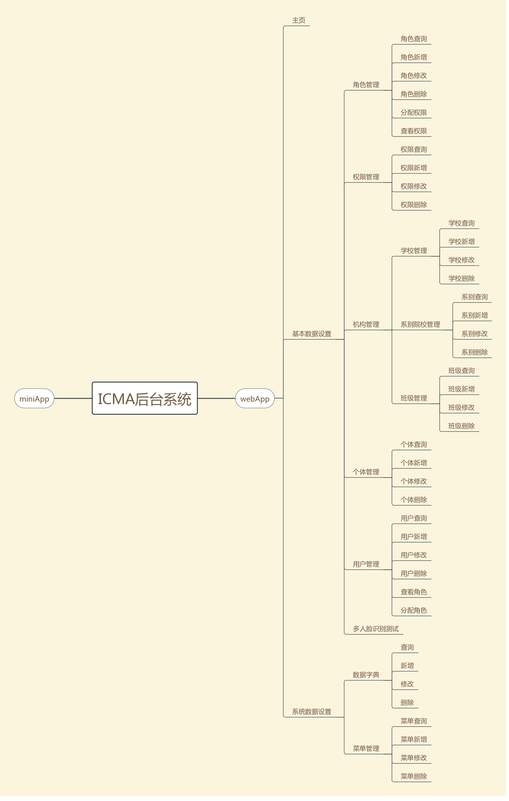

PS:此文仅以分享为由而发。
在这里介绍下我的毕设：
后台系统已经开放到服务器上，你可以在百度上搜icma后台

或者直接 www.hengsir.cn
进入后有一篇教程文档，感兴趣的可以下载研究下，如果你想使用但学校班级没有符合，请点击右上角的下拉菜单联系我。


小程序在微信小程序搜索：新式多人脸课堂签到系统

画了两张时序图，最近才学了下
学生想要能够被识别出来，一定要有这步操作，录入自己的人脸信息

而小程序则用来做识别的照片拍摄与上传：

最后附上一张icma后台的总功能结构图

〔完〕